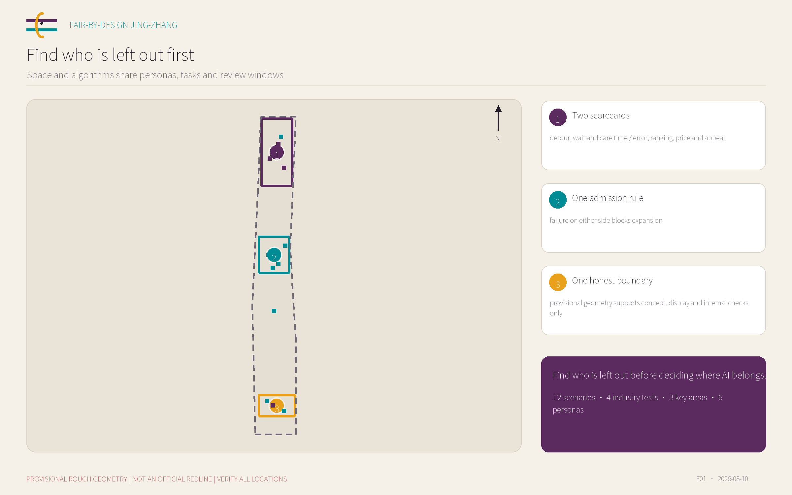
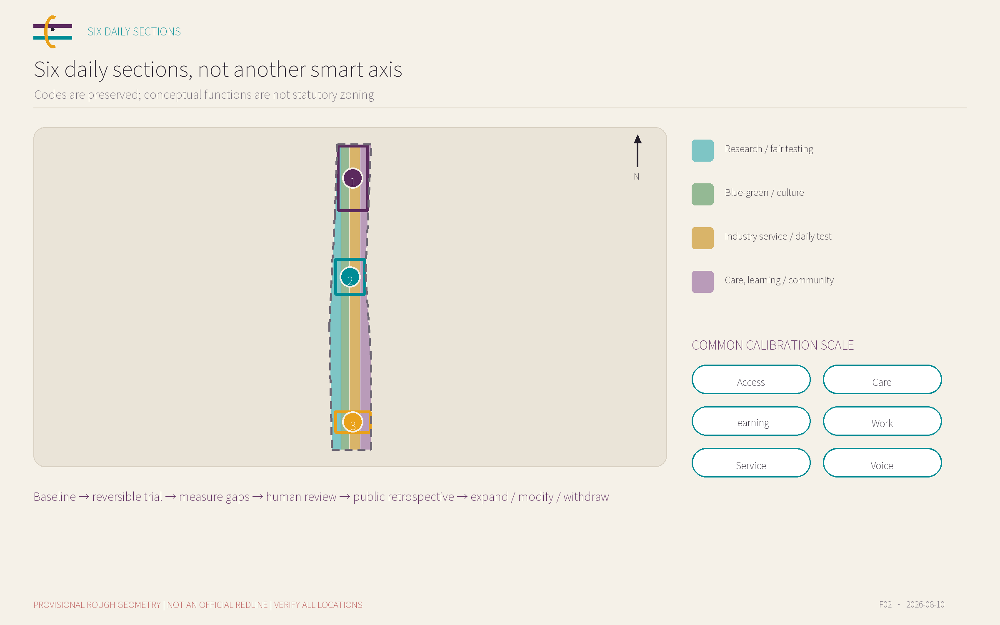
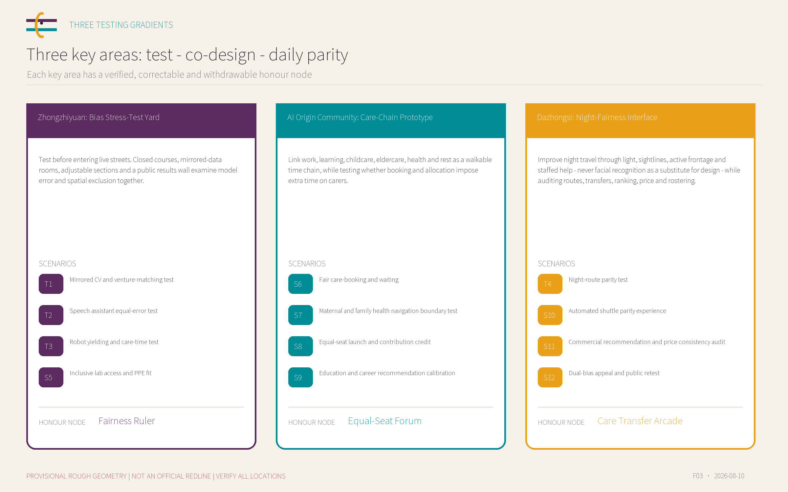
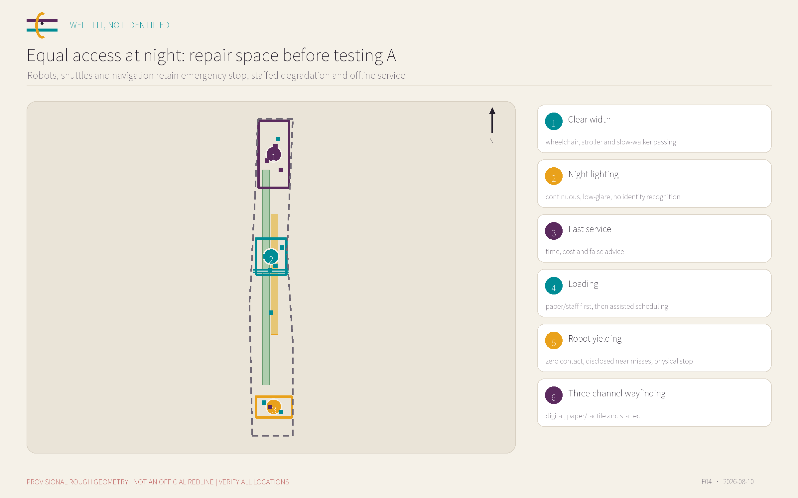
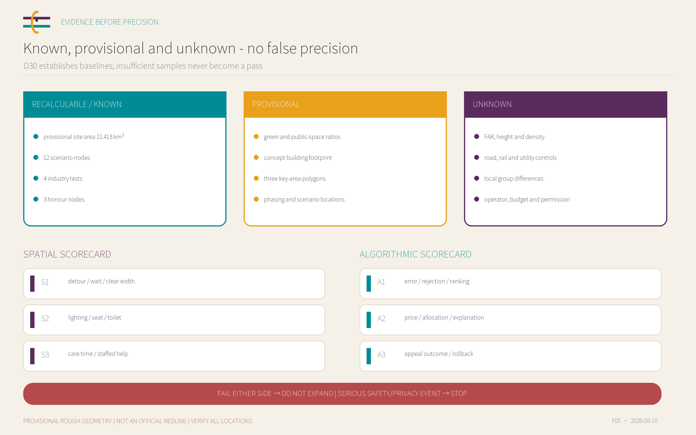

Zhongzhiyuan: Bias Stress-Test Yard
Test before entering live streets. Closed courses, mirrored-data rooms, adjustable sections and a public results wall examine model error and spatial exclusion together.
Fairness RulerFind who is left out before deciding where AI belongs.
OPEN CONCEPT SUBMISSION | PROVISIONAL ROUGH GEOMETRY | NOT PLANNING OR CONSTRUCTION APPROVAL


Test before entering live streets. Closed courses, mirrored-data rooms, adjustable sections and a public results wall examine model error and spatial exclusion together.
Fairness RulerLink work, learning, childcare, eldercare, health and rest as a walkable time chain, while testing whether booking and allocation impose extra time on carers.
Equal-Seat ForumImprove night travel through light, sightlines, active frontage and staffed help - never facial recognition as a substitute for design - while auditing routes, transfers, ranking, price and rostering.
Care Transfer Arcade
difference in access to equal-size booths, equal time slots and accessible pitching seats
group gaps in selection, ranking and explanation completeness for qualification-matched mirrored CVs
device reach and task-time gaps across stature and hearing needs
group gaps in word error, command completion and correction burden
minimum clearance, detour, waiting time and parity of accessible routes
group gaps in detection, yielding, near misses and human takeover
gaps in time, cost, lighting continuity, active frontage, rest and last-service connection
group gaps in route ranking, cost estimation, interchange feasibility and false alerts
reach, clear width, PPE size coverage and queue-time gaps
group gaps in rejection, false alarms and human override time
gaps in walk distance, seats, toilets, stroller parking and waiting
group gaps in booking, waitlist ranking, reminder reach and no-show penalties
privacy, accessibility, referral walk time and companion seating
information completeness, mis-referral and escalation of high-risk questions
gaps in prime slots, accessible seats, speaking time and backstage preparation
group gaps in recommendation exposure, speaker order and omitted credit
time-slot, quiet-seat, care-compatibility and no-account information gaps
group gaps in field and job exposure, salary bands and advanced-course recommendations
gaps in waiting, boarding, ramp availability and sheltered seating
group gaps in dispatch wait, detour, denied boarding and takeover time
gaps in visibility, queue, seating and accessible reach for equivalent offers
mirrored-profile gaps in ranking, discount, price display and event recommendation
distance to appeal, wait, accessibility, resolution time and visibility of spatial repairs
group gaps in intake, human review, rollback and correction outcome

Internal consistency only; not a precise redline.
Bound to provisional geometry; not an approved control.
Recalculated from concept geometry; replace with official data.
All 17 announcement tasks plus agent.1-agent.6 map to narrative, geometry, metrics, drawings and checks.
Deterministic, spatial, visual and professional gates are included locally; CI on the same head remains authoritative.

BLDG-001 is a concept footprint, not a survey, approved scale or demolition decision; FAR, height, density and setbacks remain unknown.
PROV-KEY-001 · T1-T3
PROV-KEY-002 · S6-S9
PROV-KEY-003 · T4,S10-S11
三处重点区 · S12
The official announcement and repository taskbook define the task; international cases are methodological background with full use and rights recorded in sources.json.
No site visit, interview or live pilot; all locations use rough provisional geometry, while operator, budget, permission and local group baselines remain unconfirmed.